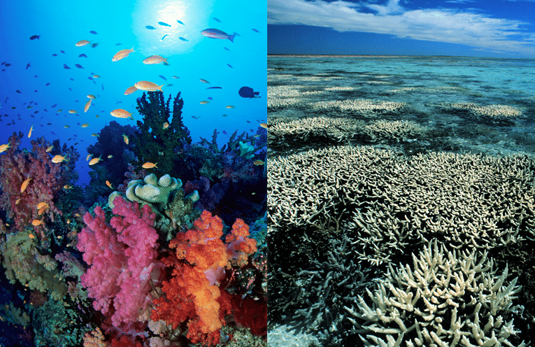

Coral Bleaching is the act of corals losing their vibrant colors and turning white through being stressed. The leading cause of coral bleaching is climate change. This includes an increase in ocean temperature, overexposure to sunlight, or harmful nutrients from runoff or pollution. Any of these conditions could cause the coral to expel the symbiotic algae living in their tissues which in turn causes the corals to turn completely white - hence the bleaching term.

Image Caption: A coral reef that is healthy (on the left) versus a coral reef that is bleached (on the right) - source: Greenspace
Why is it important?
It is important to remember that while corals are not necessarily “dead” from a coral bleaching event, it is still crucial to make sure they survive the bleaching events. Corals provide resources to many species that call the ocean their homes. By understanding the patterns in coral bleaching and bleaching severity, we can evaluate ocean health and understand what we can do to prevent more coral reefs from being bleached and ultimately prevent more damage to our oceans.
Data, Visualizations, and Results
Data was obtained from Harvard Dataverse (link to data) which is a free data repository that is open to all researchers from any discipline (both inside and outside of Harvard University). It allows researchers to share, archive, cite, and access different data-sets. It was published to the repository in 2016 but has data from the mid 1800s.
Since this data-set is on corals, the ethical issues have to do with gathering information from marine life and and how much the data collection could cause harms. While the harms are minor, the benefits of this data being collected goes well beyond the health of the corals. This is because coral bleaching is an indicator of climate change so collecting data on the health of corals could have lasting impacts on reducing global warming.
Why Australia?
While coral bleaching effects corals and coral reefs worldwide, I decided to focus in on Australia because Australia is home to the Great Barrier Reef. The Great Barrier Reef is one of the largest, most popular coral reefs across the globe. The visualization below shows all the bleaching events that occurred in Australia from 1980 to 2010. As seen on the graphic, there is a congestion of bleaching events (points) near the Great Barrier Reef. So if the Great Barrier Reef has the most concentrated amount of bleaching events over time, then why is it so concentrated - despite the fact that it is a coral reef? Well, turns out the climate patterns of El Niño and La Niña could have that impact.
The climate patterns of El Niño and La Niña are known to impact surface temperature. El Niño years general result in warmer ocean temperatures while La Niña years generally result in cooler ocean temperatures. As we know, coral bleaching is most impacted by an increase in ocean temperature (hence during El Niño years the number of coral bleaching events should increase). On the contrary, it is expected that during La Niña years, the number of bleaching events should decrease due to the cooler ocean temperatures. In fact, according to the Great Barrier Reef Foundation, La Niña years tend to prevent mass coral bleaching events! For the purpose of simplicity, only four years were chosen to be analyzed: two El Niño years and two La Niña years. The El Niño years were 1997 and 2002 while the La Niña years were 2007 and 2009. The El Niño in 1997 was categorized as “very strong” and the El Niño in 2002 was categorized as “moderate”. Both of the La Niña years were categorized as “strong”. The reason why these years were chosen was mostly based off the data that was available for coral bleaching events and what the data was showing.
As seen in the line graph below, the two spikes in the number of bleaching events are directly correlated with the El Niño very strong year in 1997 and the moderate year in 2002. Comparing the El Niño and La Niña years shows us that the El Niño event in 1997 caused 1244 bleaching events while the La Niña strong in 1999 caused 13 bleaching events. This is a significant difference between the number of coral bleaching ebents that occurred in Australia. This makes sense with difference between effects of El Niño and La Niña.
Code
coralcountperregion %>%filter(REGION =="Australia") %>%ggplot(aes(x = YEAR, y = n)) +geom_line() +theme_classic() +scale_x_discrete(limits =c(1980, 1985, 1990, 1995, 2000, 2005, 2010)) +annotate("point", x =1998, y=1244, size =3, color ="red") +annotate("text", x =2002.5, y =1244, label ="El Niño '97 (very strong)", color ="red") +annotate("point", x =2002, y=644, size =3, color ="red") +annotate("text", x =2006, y =644, label ="El Niño '02 (moderate)", color ="red") +annotate("point", x =2007, y=28, size =3, color ="blue") +annotate("text", x =2007, y =110, label ="La Niña '07 (strong)", color ="blue") +annotate("point", x =1999, y=13, size =3, color ="blue") +annotate("text", x =1999, y =-35, label ="La Niña '99 (strong)", color ="blue") +labs(x ="Year",y ="",title ="Number of Bleaching Events in Australia from 1980 to 2010",caption =" Graphic by T. Chait | Source: Harvard Dataverse",color =NULL) +theme(legend.position ="none",plot.title =element_text(face ="bold", size =12, ),plot.title.position ="plot",axis.title.x =element_text(vjust =0.5))
Similar to last line graph, the graph below shows the percent medium and high bleaching events in Australia from 1991 to 2009. The results suggests that there is an increase in bleaching severity during El Niño years as opposed to during La Niña years. This is also significant because comparing the graph below to the graph above, we can see a similar pattern with regards to the spikes and which years they correspond to. For example, the previous graph shows that more than 1200 bleaching events occurred during the El Niño event in 1997. While, the graph below shows that more than 0.2 percent of the bleaching events in 1997 were medium and high severity. The fact that these two graphs have the same big increase in amount/percent during the same year which happens to be an El Niño yea shows us that El Niño (and La Niña) years have a huge effect on coral bleaching which directly relates back to ocean health.
Code
coralcountperregionbleach %>%filter(REGION =="Australia", BLEACHING_SEVERITY %in%c("HIGH", "Medium")) %>%group_by(YEAR) %>%mutate(sumperyear =sum(n)) %>%summarize(REGION, YEAR, sumperyear) %>%unique() %>%mutate(percentMedHigh = sumperyear/2229) %>%ggplot(aes(x = YEAR, y = percentMedHigh)) +geom_line() +theme_classic() +scale_x_discrete(limits =c(1991, 1996, 2001, 2006)) +annotate("point", x =1998, y=0.2265589951 , size =3, color ="red") +annotate("text", x =2000.75, y =0.2265589951 , label ="El Niño '97 (very strong)", color ="red") +annotate("point", x =2002, y=0.10, size =3, color ="red") +annotate("text", x =2004.5, y =0.10, label ="El Niño '02 (moderate)", color ="red") +annotate("point", x =2007, y=0, size =3, color ="blue") +annotate("text", x =2007, y =-0.01, label ="La Niña '07 (strong)", color ="blue") +annotate("point", x =1999, y=0.0013458950, size =3, color ="blue") +annotate("text", x =1999, y =-0.01, label ="La Niña '99 (strong)", color ="blue") +labs(x ="Year",y ="",title ="Percent of Medium and High Bleaching Events in Australia",subtitle ="(from 1991 to 2009)",caption ="Graphic by T. Chait | Source: Harvard Dataverse",color =NULL) +theme(legend.position ="none",plot.title =element_text(face ="bold", size =12, ),plot.title.position ="plot",axis.title.x =element_text(vjust =0.5))
Finally, the graph below shows spatial location of bleaching events as it relates to the Great Barrier Reef in Australia. This graph takes the information learned in the previous two graphs and incorporates spatial mapping to better visualize where the coral bleaching is occurring. However, only the years 1998, 1999, 2002, and 2006 are shown on the graph because those are the four El Niño and La Niña years. The results show that the most bleaching events in the area of the Great Barrier Reef occurred in 1998 and 2002. However, it turns out that 1998 and 2002 are strong and moderate El Niño years (as discussed all along with this case study).
Code
coralbleachmedhigh4yrs <- coralbleachmedhigh %>%filter(YEAR %in%c("1998", "1999", "2002", "2006")) %>%mutate(Yeartype =ifelse(YEAR %in%c("1998", "2002"), "El Niño", "La Niña")) ggplot(data = world) +geom_sf() +geom_point(data = coralbleachmedhigh4yrs, aes(x = LON, y = LAT, fill = BLEACHING_SEVERITY), size =2, shape =23) +facet_wrap(Yeartype~YEAR) +coord_sf(xlim =c(140, 160), ylim =c(-30, -10), expand =FALSE) +theme_void() +labs(title ="Coral Bleaching Events in Australia",subtitle ="near Great Barrier Reef",y ="",x ="",fill ="Bleaching Severity",caption ="Map by T. Chait | Source: Harvard Dataverse") +theme(legend.position ="bottom",plot.title =element_text(face ="bold", size =12, ),plot.title.position ="plot",axis.title.x =element_text(vjust =0.5))
Why is this case study important?
Throughout this case study we have proven many times that El Niño and La Niña can impact a corals health and possibly cause coral bleaching. This is important to know because coral is home to many marine species and provides homes, resources, and nutrients to lots of marine life. If more coral to became bleached then that means some marine life species could be without a home or food source. It is important for us humans to think about the implications and lasting effects of our actions not just on ourselves but also the other life forms that call Earth their home!
Additionally, it is important to note that we don’t know whether the trends seen in this case study are magnified due to the researchers simply collecting more data during the El Niño years when compared to the La Niña years. It seems as though the trends are seen in many different ways that this would not be the case but when dealing with data it is important to keep in mind!

![This is a line graph showing the percent of medium and high bleaching severity for coral bleaching events in Australia from 1991 to 2009. This graph also shows when the El Niño and La Niña occured and at what strength they were. The graph suggests that the percent of medium and high bleaching events increase during El Niño years as opposed to being around zero during La Niña years. This ultimately suggests that El Niño years cause in increase in the total number of bleaching events and the bleaching severity.](coralbleaching_files/figure-html/unnamed-chunk-4-1.png)
![This graphic is a spatial map that is split into four quadrants for the four years of El Niño and La Niña discussed throughout this case study which are 1998, 1999, 2002, and 2006. The years of 1998 and 2002 are the El Niño years while 1999 and 2006 are the La Niña years. In each quadrant of a year is a simple map that has points with the medium and high severity bleaching events near the Great Barrier Reef in Australia. This graph suggests that El Niño and La Niña do impact coral bleaching in Australia which could impact ocean health in turn.](coralbleaching_files/figure-html/unnamed-chunk-5-1.png)